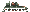
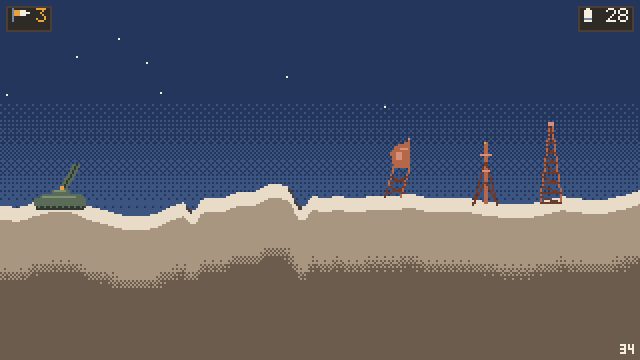
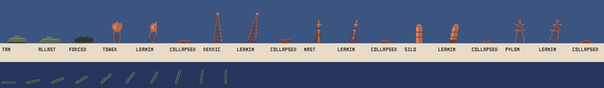
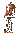
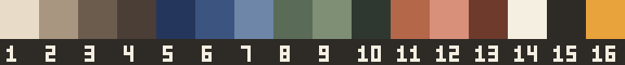

Android arm64
- Download the APK on your phone.
- Open it, and let your browser install unknown apps when asked.
- Touch controls are built in. Updates install over builds signed with the same key.

SALT LINE▌ ALPHA 0.1 · FREE · SOURCE INCLUDED
Aim through the wind. Bring down structures and leave the terrain broken behind you. Every shell counts in this single-player artillery roguelike, with a new modifier draft every four screens.
Android · Windows · macOS · Linux — rolling dev builds to sideload today, a proper release when the alpha stops moving.
Line up an arc, read the wind, and bring the tower down. The crater and wreckage stay on that screen while you finish the fight.

Rebuilt from main on every merge, so expect the odd rough edge.
Desktop builds are unsigned; macOS and Windows may show a security warning.
Android is a sideloaded APK.
SaltLine.exe (SaltLine-arm64.exe on ARM).SaltLine.app../SaltLine.x86_64 (./SaltLine.arm64 on ARM).Verify with SHA256SUMS · all dev build files
Not a velocity offset. Lateral drift grows with the square of flight time, so a lofted shot is punished far harder than a flat one. Most of the difficulty curve falls straight out of that one decision.
vx += wind * dt
Before a screen is drawn, the generator finds three or more surviving trajectory candidates per target — checked against your current loadout and verified by the same damage model the game runs. If it can't, it rolls again. You are never handed an impossible board.
MIN_SOLUTIONS = 3
Same seed plus same inputs gives a byte-identical final state on Linux, macOS and Windows — enforced in CI by comparing a digest across all three. No libm, no thread RNG, no map iteration in any state-affecting path. A run saves as a seed and a shot log.
DT = 1.0 / 120.0 · f64 throughout
Everything below is generated by the game's own art pipeline — same palette, same native grid, integer scaling only.


 INTACT
INTACT
LEANING COLLAPSED
COLLAPSEDBARREL 0° · TRUE 0.0°
The sprite is quantized to 5°. The numeric field is not. That gap is the whole reason the Vernier modifier feels like an instrument instead of a stat.

Twenty-four modifiers, four columns, three offers. They are data rows folded into a loadout — never a branch in the ballistics core.
git clone https://github.com/cascadiacollections/saltline
cd saltline
cargo test # sim + presentation, no engine needed
cargo build -p salt-line-godot # the GDExtension
godot --path . # playBuild before you launch: the engine loads the extension out
of target/, so a stale build is what it will run.
| ← → | Angle, one quantization step (Shift: ten) |
|---|---|
| ↑ ↓ | Power (Shift: ten steps) |
| Space | Fire |
| [ ] | Airburst fuse distance |
| , . | Reposition the emplacement (needs Enfilade) |
| 1 2 3 | Take a draft offer |
| S / C / R | Seed entry / copy seed / replay seed |
| F1 | Debug overlay |